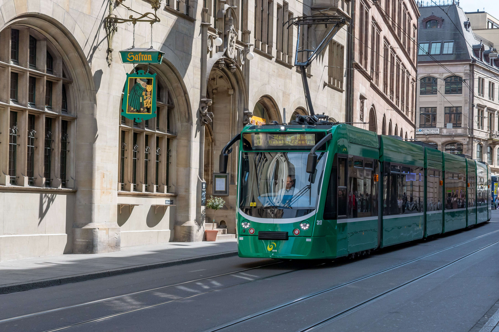

Roman Castle
Basel is commonly considered to be the cultural capital of Switzerland and the city is famous for its many museums, including the Kunstmuseum, which is the first collection of art accessible to the public in the world (1661) and the largest museum of art in Switzerland, the Fondation Beyeler (located in Riehen), the Museum Tinguely and the Museum of Contemporary Art, which is the first public museum of contemporary art in Europe. Forty museums are spread throughout the city-canton, making Basel one of the largest cultural centres in relation to its size and population in Europe.
The University of Basel, Switzerland's oldest university (founded in 1460), and the city's centuries-long commitment to humanism, have made Basel a safe haven at times of political unrest in other parts of Europe for such notable people as Erasmus of Rotterdam, the Holbein family, Friedrich Nietzsche, Carl Jung, and in the 20th century aslso Hermann Hesse and Karl Jaspers.
Basel was the seat of a Prince-Bishopric starting in the 11th century, and joined the Swiss Confederacy in 1501. The city has been a commercial hub and an important cultural centre since the Renaissance, and has emerged as a centre for the chemical and pharmaceutical industries in the 20th century. In 1897, Basel was chosen by Theodor Herzl as the location for the first World Zionist Congress, and altogether the congress was held there ten times over a time span of 50 years, more than in any other location.The city is also home to the world headquarters of the Bank for International Settlements. The name of the city is internationally known through institutions like the Basel Accords, Art Basel and FC Basel.
Tourism
The unique representation of a bishops' crozier as the heraldic charge in the coat of arms of Basel first appears in the form of a gilded wooden staff in the 12th century. It is of unknown origin or significance (beyond its obvious status of bishop's crozier), but it is assumed to have represented a relic, possibly attributed to Saint Germanus of Granfelden.[39] This staff (known as Baselstab) became a symbol representing the Basel diocese, depicted in bishops' seals of the late medieval period. It is represented in a heraldic context in the early 14th century, not yet as a heraldic charge but as a kind of heraldic achievement flanked by the heraldic shields of the bishop. The staff is also represented in the bishops's seals of the period. The use of the Baselstab in black as the coat of arms of the city was introduced in 1385. From this time, the Baselstab in red represented the bishop, and the same charge in black represented the city. The blazon of the municipal coat of arms is In Silber ein schwarzer Baselstab (Argent, a staff of Basel sable). In 1400, Basel was able to purchase the towns of Liestal, Homburg and Waldenburg with its surrounding territory.
1493 woodcut of Basel, from the Nuremberg Chronicle
In 1412 (or earlier), the well-known Gasthof zum Goldenen Sternen was established. Basel became the focal point of western Christendom during the 15th century Council of Basel (1431 1449), including the 1439 election of antipope Felix V. In 1459, Pope Pius II endowed the University of Basel, where such notables as Erasmus of Rotterdam and Paracelsus later taught. At the same time the new craft of printing was introduced to Basel by apprentices of Johann Gutenberg. In 1461, the land around Farnsburg became a part of Basel.